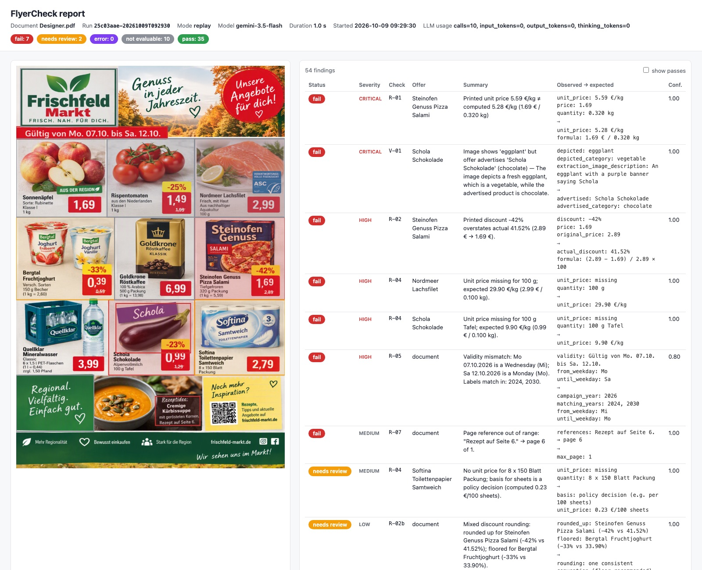

Arbeitsprobe · KI Consultant
KI-gestützte Konsistenzprüfung von Angebotsflyern
Zielarchitektur · Umsetzung & Betrieb · Risiken & Grenzen
lauffähiger PoC
13 Prüfungen
Golden Set 9/9 · P = R = 1,00
Mutations-Recall 95 %
190 automatisierte Tests
FlyerCheck – Proof of Concept auf Google Gemini, Azure OpenAI über denselben Port anschließbar · Oktober 2026
Begrüßung. Ich zeige in rund 15 Minuten einen Lösungsansatz entlang der drei Leitfragen – und einen lauffähigen PoC, der die Prüfungen auf dem Beispiel-Flyer tatsächlich durchführt.
Agenda
Drei Leitfragen – beantwortet mit Analyse, Architektur und einem messbaren PoC
Ausgangslage, Aufgabenverständnis & Fehlerklassen
Analyse des Beispiel-Flyers
Lösungsprinzip & Zielarchitektur Q1 Umsetzung, Qualitätssicherung & Betrieb Q2 Ergebnisse des PoC – inkl. Stammdaten-Abgleich
Risiken & Grenzen Q3 Roadmap, Nutzen & Entscheidungsbedarf
Anhang: Datenmodell · CI/CD & Doku · Vorgehen · Links
Q1 Wie sieht die Zielarchitektur für die automatisierte Prüfung aus?
Q2 Wie werden die Prüfungen umgesetzt, produktiv bereitgestellt und dokumentiert?
Q3 Welche Risiken und Grenzen hat die Lösung?
Randbedingung: LLMs in Azure oder Google Cloud verfügbar · fehlende Informationen durch explizite Annahmen ersetzt
Die Struktur folgt den drei Leitfragen der Aufgabe. Q1 Architektur, Q2 Umsetzung und Betrieb, Q3 Risiken – dazwischen die Belege aus dem PoC.
Ausgangslage
Die manuelle Wochenprüfung ist fehleranfällig und teuer – KI soll vorprüfen, der Mensch nur noch entscheiden
Ist
Flyer aus DTP
Sichtprüfung Seite für Seite
Preise & Grundpreise nachrechnen
Abgleich mit Kampagne / PIM
Korrekturschleifen
Freigabe
Soll
Flyer aus DTP
KI-Extraktion
Regel- & Bildprüfungen
Befunde mit Evidenz
Mensch prüft nur Auffälligkeiten
Freigabe
① Ist-Situation & Pain Points
Wöchentlicher Takt – Prüfung im kritischen Pfad zum DruckterminManuelle Sichtprüfung Seite für Seite
Preise, Grundpreise, Rabatte von Hand nachrechnen
Abgleich mit Kampagnen- und Preisdaten
Termindruck → Stichprobe statt Vollprüfung ② Konsequenzen von Fehlern
Rechtlich: PAngV (Grundpreis), UWG (irreführende Rabatte, Werbeaussagen) – AbmahnrisikoReputation: falsches Bild, falscher Preis – öffentlich sichtbarOperativ: Kassendifferenzen, Kulanz, NachdruckVertraulich: unveröffentlichte Preise → EU-Region, kein Training ③ Zielbild
KI-gestützte Vorprüfung jedes Flyers – vollständig, in MinutenJeder Befund mit Evidenz : Markierung, erwartet vs. gedruckt
Was nicht prüfbar ist, wird sichtbar ausgewiesen
Mensch entscheidet über Auffälligkeiten und bleibt verantwortlich
Heute ist die Prüfung manuell, wöchentlich und unter Termindruck – also oft nur stichprobenartig. Fehler kosten rechtlich, reputativ und operativ. Zielbild: Die KI prüft jeden Flyer vollständig vor, der Mensch entscheidet nur noch über belegte Auffälligkeiten.
Aufgabenverständnis & Problemzerlegung
Ziel ist Entscheidungsunterstützung mit Evidenz – „Konsistenz“ zerfällt in 10 Fehlerklassen
Im Scope: PDF-Eingang, Extraktion mit Position, Preis-/Grundpreis-/Rabatt-/Pfand-/Datumsregeln, Bild ↔ Text, Verweise, Dubletten, Stammdaten-Adapter, Bericht, Review-API, Evaluation
Nicht im Scope: Flyer automatisch korrigieren · Rückschreiben ins PIM · automatische Freigabe · juristische Bewertung von Werbeaussagen
Annahmen:
A1 Eingang: druckfertiges PDF A2 PIM im PoC nicht verfügbar → synthetische CSV als Stellvertreter A3 Cloud-LLM in EU-Region zulässig A4 Kampagnenjahr aus Metadaten · Rechtsrahmen PAngV, UWG
E-01 Produkt ↔ Bild KI-Vision
E-02 Preis vs. Stammdaten Referenz
E-03 Arithmetik (Grundpreis, Rabatt) Regel
E-04 Menge & Einheit Regel
E-05 Zuordnung im Layout Geometrie
E-06 Datum & Kampagne Regel
E-07 Werbeaussagen Referenz
E-08 Vollständigkeit (Grundpreis, Pfand) Regel
E-09 Querverweise & Dubletten Regel
E-10 Lesbarkeit & Technik CV/OCR
Regel (Code) – exakt, reproduzierbar, testbar
KI (LLM) – Wahrnehmung: lesen, gruppieren, Bilder deuten
Referenz – autoritative Daten schlagen Vermutungen
Prinzip: „Keine Befunde“ heißt nicht „fehlerfrei“ – was nicht geprüft werden konnte, wird als nicht prüfbar ausgewiesen.
Das System entscheidet nicht, es unterstützt. Statt „KI prüft den Flyer“ zerlege ich das Problem in zehn Fehlerklassen – daraus folgt die Methodenwahl: Rechnen ist Code, Wahrnehmen ist KI, Wahrheit kommt aus Referenzdaten.
Analyse des Beispiel-Flyers
9 Befunde: 7 Fehler, 2 Policy-Fragen – alle von Hand nachgerechnet
1 Bild ≠ Produkt: „Schola Schokolade“ zeigt eine Aubergine KI-Vision
2 Pizza – zwei Fehler: Grundpreis 5,59 €/kg gedruckt, korrekt 1,69 € / 0,32 kg = 5,28 €/kg ; Rabatt −42 % beworben, tatsächlich 41,52 % → überhöht (UWG) Regel
3 Lachsfilet: Grundpreis fehlt (PAngV) → erwartet 29,90 €/kg Regel
4 Schokolade: Grundpreis fehlt → erwartet 9,90 €/kg Regel
5 Gültigkeit: „Mo 07.10.–Sa 12.10.“ passt zu 2024, nicht zu 2026 (12.10.2026 = Montag) Regel
6 Verweis ins Leere: „Rezept auf Seite 6“ – Dokument hat 1 Seite Regel
7 Toilettenpapier: kein Grundpreis je Blatt/Rolle → Bezugsbasis ist Policy-Frage Prüfen
8 Rundung uneinheitlich: Joghurt abgerundet (33,9 → 33 %), Pizza aufgerundet (41,5 → 42 %) Prüfen
? Offen: Stimmt 1,69 € überhaupt? Ohne Stammdaten nicht prüfbar – Auflösung auf Folie 12
Diese Analyse ist zugleich das Golden Set – das Abnahmekriterium für den Code.
Alle Werte sind nachgerechnet, nicht geschätzt. Auffällig: 5,59 €/kg entspricht exakt 1,79 € / 0,32 kg – ein Hinweis, den wir später mit Stammdaten auflösen.
Lösungsprinzip
KI nimmt wahr · Code prüft · Mensch entscheidet
① Wahrnehmen – multimodales LLM
Liest wörtlich, was gedruckt ist, gruppiert Angebote, liefert Positionen.
Rechnet nie.
price_raw : "1,69"
quantity_raw : "320 g Packung"
unit_price_raw : "1 kg = 5,59"
➜
② Prüfen – deterministischer Code
Normalisiert (Dezimal, Einheiten) und prüft Regeln exakt und reproduzierbar.
1,69 € / 0,320 kg = 5,28 €/kg
gedruckt 5,59 €/kg → Fehler
Regel R-01@1.0 · Konfidenz 1,0
➜
③ Entscheiden – Mensch
Sieht Befund, Markierung im Flyer, beobachteten vs. erwarteten Wert – und bestätigt, verwirft oder eskaliert.
bestätigen verwerfen eskalieren
Warum nicht „ein LLM prüft alles“? Nicht reproduzierbar, Rechenfehler, keine stabile Evidenz, nicht regressionstestbar.
Warum nicht nur OCR + Regeln? Bild-Text-Abgleich und freie Layouts sind ohne visuelles Verständnis nicht lösbar.
Hybrid = jede Prüfung einzeln testbar, Modelle austauschbar, Befunde auditierbar. ADR-0001
5 Status: Fehler Prüfen nicht prüfbar Systemfehler ok
· Schweregrad und Konfidenz getrennt, nie zu einem Score vermischt
Das ist die zentrale Architekturentscheidung: Das LLM wird nur für Wahrnehmung eingesetzt, nie für Arithmetik. Dadurch ist jeder Befund reproduzierbar und testbar.
Q1 Zielarchitektur · Systemkontext
FlyerCheck ist eine Prüfstufe zwischen Produktion und Freigabe
Flyer-Produktion
DTP / Agentur
FlyerCheck
Extraktion · 11 Regeln · 2 KI-Bildprüfungen
Evidenzbericht · REST-API · Review
Container · Python 3.12 · pydantic-Vertrag
Freigabe-Workflow
Publikation / Druck
PDF + Metadaten
Befunde + Bericht
Cloud-LLM (Port)
Gemini · Azure OpenAI
PIM / Preis-DB
Referenzdaten (PoC: CSV)
OCR-Gegenprobe
Zielbild · Document AI
QA-Reviewer
bestätigt · verwirft
Wahrnehmung
Preise lesen
Review-API
gestrichelt = austauschbarer Adapter hinter einer Schnittstelle (Ports & Adapters)
Leitplanken: EU-Datenresidenz · kein Training auf Kundendaten · Workload Identity / Managed Identity, keine Schlüssel · jedes Ergebnis versioniert (Dokument-Hash, Regel, Modell, Prompt).
FlyerCheck ist keine neue Plattform, sondern eine Prüfstufe im bestehenden Prozess. Alle externen Abhängigkeiten – LLM, Stammdaten, OCR – liegen hinter Schnittstellen und sind austauschbar.
Q1 Zielarchitektur · Verarbeitungspipeline
Sieben Stufen – nur zwei davon nutzen ein LLM
1 Ingest Hash, Version, Seitenbild, KampagnenjahrCode
›
2 Extraktion 1 Call/Seite, JSON-Schema, wörtliche Werte + BoxenLLM
›
3 Normalisierung „6 x 1,5 l“ → 9 lCode
›
4 Regeln R-01 … R-10: Grundpreis, Rabatt, Pfand, Datum, Layout, StammdatenCode
›
5 Bildprüfung Ausschnitt erst „blind beschreiben“, dann abgleichenLLM
›
6 Aggregation Deduplizieren, Schweregrad, SortierungCode
›
7 Bericht & Review HTML mit Markierungen, REST-APIMensch
Ports & Adapter LLM (Gemini ⇄ Azure OpenAI), OCR, Referenzdaten hinter Schnittstellen → Anbieterwechsel per Konfiguration.
Record / Replay Jede LLM-Antwort wird versioniert aufgezeichnet → deterministische Tests, Offline-Demo in 0,6 s .
Robustheit Retries + Fallback-Modellkette (429/503), Schema-Validierung, Flyertext = Daten (Prompt-Injection-Schutz).
10 Calls
je Seite: 1 Extraktion + 9 Bildprüfungen
~40 s
live je Seite; Seiten parallelisierbar
~40 k
Tokens je Seite ≈ 1–2 Cent (Flash-Klasse)
0,6 s
Replay – offline, deterministisch
Nur Stufe 2 und 5 rufen ein Modell auf; alles andere ist deterministischer Code. Record/Replay macht die Pipeline testbar wie normale Software.
Q1 Technologieentscheidung
Gemini per Spike am echten Flyer validiert – Azure OpenAI über denselben Port anschließbar
Kriterium Gemini Azure OpenAI OCR + Heuristik Visuelle Verortung (Boxen) nativ eingeschränkt exakt (Wörter) Angebote gruppieren semantisch semantisch viel Eigencode Strukturierte Ausgabe JSON-Schema strict schema – EU-Region / kein Training ja (Vertex AI) ja ja Kosten je Seite gering (Flash) gering gering Status im PoC live gemessen Adapter, offline getestet Zielbild Rolle Standard Alternative Gegenprobe
Umschalten per Konfiguration (LLM_PROVIDER ) – gleicher Vertrag, gleiche Regeln, gleiches Eval-Gate.
Spike am echten Flyer (09.10.2026)
gemini-3.5-flash ✓ 9/9 Angebote exaktgemini-3.8-flash 503 überlastetgemini-3.1-pro 429 kein Kontingentgemini-2.5-pro 404 abgekündigt
Robustheit im Ernstfall: Beim Aufzeichnen kamen 429/503 – die Fallback-Kette sprang auf gemini-3.1-flash-lite . Genau dieses Modell lieferte den Aubergine-Befund (V-01).
⇒ Fallback-Kette + Retries sind Pflicht; Modelle werden versioniert und per Golden Set verglichen.
Die Wahl ist eine Messung, kein Glaubensbekenntnis. Verfügbarkeit ist das reale Risiko – drei von vier Modellen waren am Testtag nicht nutzbar. Der Aubergine-Befund kam sogar vom Fallback-Modell; Azure ist als Adapter gebaut, aber nicht live gemessen.
Q2 Umsetzung der Prüfungen
13 Prüfungen in einem versionierten Katalog – jede mit Formel, Statuslogik und Test
ID Prüfung Logik Klasse · Methode Ergebnis Beispiel-Flyer R-01 Grundpreis korrekt Preis ÷ Menge (kg/l), Toleranz ±0,01 € E-03 Regel Pizza 3× ok R-02 Rabatt nicht überhöht beworben ≤ (Streichpreis − Preis) / Streichpreis E-03 Regel Pizza −42 % 3× ok R-02b Rundung einheitlich ab- vs. aufgerundet im Dokument E-03 Regel Prüfen: gemischt R-03 Pfand plausibel Anzahl × 0,25 € bei PET/Dose E-08 Regel Wasser 1,50 € R-04 Grundpreis vorhanden PAngV: Pflicht bei Fertigpackungen E-08 Regel Lachs Schokolade Toilettenpapier R-05 Wochentag ↔ Datum Kalenderlogik je Kampagnenjahr E-06 Regel Mo 07.10.2026 = Mi R-06/07 Pflichtfelder · Seitenverweise Name/Preis/Menge · Seite ≤ Seitenzahl E-08 · E-09 Regel „Seite 6“ R-08 Preis vs. Stammdaten Abgleich mit PIM über CSV-Adapter E-02 Referenz ohne PIM → Pizza 1,69 ≠ 1,79 R-09/10 Layout-Zuordnung · Dubletten Box-Geometrie (IoU) · gleiche Ware, anderer Preis E-05 · E-09 Geometrie ok V-01 Bild ↔ Produkt optional zweistufig: „blind beschreiben → abgleichen“ E-01 KI-Vision Aubergine 8× ok V-02 Werbeaussagen-Register „regional“, „ASC“, „100 % Arabica“ erfassen E-07 Referenz 9× nicht prüfbar (keine Zertifikatsquelle)
Jede Regel: eigenes Modul · Version (z. B. R-01@1.0 ) · Unit-Tests mit Grenzfällen · Rückverfolgung Anforderung → Regel → Test · dokumentiert in docs/design/rules-catalog.md
Jede Prüfung ist ein kleines, versioniertes Modul mit eigener Formel und eigenen Tests. Wichtig ist die ehrliche Spalte rechts: V-02 registriert Werbeaussagen, kann sie aber ohne Zertifikatsquelle nicht bestätigen.
Ergebnisse des Proof of Concept
Der PoC findet alle 9 Soll-Befunde – ohne Fehlalarm, mit Evidenz

Bericht des Standardlaufs (ohne Stammdaten) – Klick öffnet die interaktive Version
7 Fehler2 Prüfen10 nicht prüfbar1 × R-08 · 9 × V-02 35 ok
1,00
Precision & Recall vs. Golden Set (9/9)
9/9
Angebote exakt extrahiert
Mit simulierter CSV-Referenz: +1 Fehler (R-08 Pizza 1,69 € vs. freigegeben 1,79 €) → 8 / 2 / 9 / 43 · Golden 10/10
Einschränkung: ein synthetischer Flyer = Funktionsnachweis, keine Genauigkeitsaussage → Mutationstests (Folie 13) und Pilot.
▶ Bericht ohne · mit Stammdaten
Standardlauf ohne Stammdaten: 54 Prüfungen, alle neun Soll-Befunde gefunden, kein Fehlalarm. Die zehn „nicht prüfbar“ sind gewollt – sie zeigen, wo Referenzdaten fehlen, statt still zu bestehen.
Ergebnisse · Stammdaten-Abgleich
Mit Stammdaten wird aus drei Symptomen eine Ursache: Preis geändert, Folgefelder nicht
PIM-Stellvertreter designer_prices.csv (synthetisch)1,79 € · Streichpreis 2,89 € · 320 g
?
Ursache (Hypothese): Freigegebener Preis 1,79 € wurde im Layout auf 1,69 € geändert – abhängige Felder nicht nachgezogen
▼ erklärt
R-08
Preis ≠ Stammdaten: gedruckt 1,69 € ≠ freigegeben 1,79 € neu
R-01
Grundpreis falsch: gedruckt 5,59 €/kg = 1,79 € / 0,32 kg → stammt noch vom alten Preis
R-02
Rabatt überhöht: −42 % beworben; real 41,5 % (bei 1,69 €) bzw. 38,1 % (bei 1,79 €)
10/10
Golden mit Referenz, P = R = 1,00
Botschaft: Interne Konsistenz findet Symptome – erst autoritative Referenzdaten liefern die Ursache . Daher ist die PIM-Anbindung der größte Hebel der Roadmap.
Das ist für mich der stärkste Befund: Mit der Stammdaten-CSV erklärt sich, warum 5,59 €/kg gedruckt ist – das ist exakt der Grundpreis des freigegebenen Preises 1,79 €. Jemand hat den Preis geändert, aber Grundpreis und Rabatt nicht nachgezogen. Drei Befunde, eine Ursache, eine Korrektur.
Q2 Qualitätssicherung & Evaluation
Mutationstests messen, was ein Flyer allein nicht kann – und decken einen echten blinden Fleck auf
Recall je Fehler-Operator · 41 künstlich eingesetzte Defekte
M1 Preis geändert
5/7 · 71 % M2 Grundpreis-Tippfehler
7/7 M4 Grundpreis gelöscht
5/5 M6 Wochentag verschoben
2/2 M7 Seitenverweis ins Leere
1/1
0 Kollateral-Fehlalarme · Golden Set 9/9 · Status-Übereinstimmung 1,00
Die 2 Fehlschläge – ehrlich analysiert
Angebot Preis Grundpreis Wasser 9 l 3,99 → 4,09 0,44 → 0,45 €/l Toilettenpapier 1200 Bl. 2,79 → 2,89 0,23 → 0,24 €/100 Bl.
R-01 toleriert
±0,01 € . Bei Großpackungen verschiebt ein Preisfehler von +0,10 € den Grundpreis nur um ~1 Cent → unter der Schwelle.
Lehre: Toleranz muss relativ bzw. policy-basiert sein – und R-08 (Stammdaten) fängt den Fall unabhängig davon.
Golden Set Soll-Befunde
›
Mutation 9 Operatoren
›
Replay deterministisch
›
Eval-Gate blockiert CI
Ein Flyer beweist Funktion, keine Genauigkeit. Darum setzen wir gezielt Fehler in eine reparierte Version ein und messen. 95 % Recall – und die zwei Ausreißer sind kein Zufall, sondern ein echter Konstruktionsfehler der absoluten Toleranz. Genau dafür ist die Methode da.
Q2 Produktive Bereitstellung & Dokumentation
Ein Container, serverless betrieben – der PoC läuft heute, das Zielbild ist klar abgegrenzt
Upload / DTP-HookCLI · API-Upload
➜
REST-API (FastAPI)Upload · Befunde · Review
➜
Queue ➜ Worker-Job Zielbild Pub/Sub · Cloud Run Jobs
➜
LLM-EndpunktPoC: Gemini Developer API
Baustein PoC (heute) Zielbild Google Cloud Zielbild Azure Compute Docker-Image, lokal / Cloud Run (Notizen) Cloud Run Service + Jobs Container Apps (+ Jobs) LLM Gemini Developer API (EU-Residenz erst mit Vertex) Vertex AI Gemini · europe-west3 Azure OpenAI · EU-Region Daten Datei-Store (JSON, HTML-Bericht) Cloud Storage · PostgreSQL (Audit) Blob Storage · PostgreSQL Queue · Secrets – · Umgebungsvariable Pub/Sub · Secret Manager Service Bus · Key Vault
Sicherheit EU-Region, private Endpunkte, Rollen (Reviewer/Admin), Löschfristen.
Skalierung Parallelisierung je Seite, Cache je Seiten-Hash, scale-to-zero.
Verfügbarkeit Retries, Fallback-Modelle, idempotente Jobs, Replay als Notfallpfad.
Doku & CI Docs-as-Code + 8 ADRs im Repo · CI: Lint → Tests → Replay → Eval-Gate (Anhang).
Ein modularer Monolith in einem Container – bewusst einfach. Heute läuft er lokal bzw. als Image; das Zielbild mit Queue, Datenbank und Vertex AI in der EU ist gestrichelt markiert. Dokumentation und ADRs liegen im selben Repo und werden mit dem Code reviewt.
Q3 Technische Risiken
Die größten Risiken liegen in der Wahrnehmung – die Architektur fängt sie ab
Auswirkung →
R7 Prompt-Injection
R6 Datenschutz R5 keine Stammdaten
R1 Zahl falsch gelesen R2 falsche Zuordnung R4 Scheinsicherheit
R11 Kosten/Latenz
R9 Policy-Abhängigkeit R12 Bildgrenzen
R3 Halluzination R8 Drift / Verfügbarkeit R10 kleines Eval-Set
Eintrittswahrscheinlichkeit →
Risiko Gegenmaßnahme R1 Zahl falsch gelesenWörtliche Transkription, OCR-Gegenprobe, Evidenz-Ausschnitt zur 5-s-Prüfung R2 Falsche ZuordnungBoxen je Feld, Geometrie-Regel R-09, Kachelung dichter Seiten R3 HalluzinationTemperatur 0, Schema, „blind beschreiben → abgleichen“, Arithmetik nur im Code R4 Scheinsicherheit„nicht prüfbar“ sichtbar, Mensch im Prüfprozess, keine Auto-Freigabe R5 Keine StammdatenPIM-Anbindung = Roadmap-Punkt Nr. 1 (PoC: CSV-Adapter, R-08 aktiv) R6 Vertrauliche PreiseEU-Region (Vertex/Azure), Enterprise-Terms, private Endpunkte, Löschfristen R8 Drift / VerfügbarkeitVersionen pinnen, Fallback-Kette (im Spike real benötigt), Regressions-Gate R10 Kleines Eval-SetMutationstests (95 %), Schattenbetrieb mit realen Flyern
Die kritischen Risiken liegen oben rechts: falsch gelesene Zahlen, falsche Zuordnung und Scheinsicherheit. Jedes hat eine konkrete, bereits umgesetzte oder geplante Gegenmaßnahme.
Q3 Grenzen & organisatorische Risiken
Was die Lösung bewusst nicht leistet – und was organisatorisch mitgedacht werden muss
Absicht erkennen Ob 1,69 € der geplante Preis war, weiß nur das Stammdatensystem – ohne Referenz nur interne Konsistenz.
Rechtliche Wahrheit „nachhaltig“, „regional“, „ASC“ werden registriert (V-02), ohne Zertifikatsquelle aber nicht bestätigt.
Unsichtbares & Statistik Sorte/Gewicht oft nicht im Foto entscheidbar → Prüfen . Ein Flyer + 41 Mutanten ≠ Feldgenauigkeit.
Automation Bias & Alarmmüdigkeit Zu viele Hinweise (z. B. 9× V-02) stumpfen ab → Hinweise gruppieren, nach Schweregrad sortieren, Ablehnungsquote messen.
Betriebsrat (§ 87 BetrVG) Review-Log erfasst Personenhandeln → Audit-Log zweckgebunden, Auswertung nur pseudonymisiert, Betriebsvereinbarung früh klären.
EU AI Act Kein Hochrisiko-Anwendungsfall (Assistenz, Mensch entscheidet) → Transparenz, Zweck und Modellversionen dokumentieren.
Konsequenz: Entscheidungsunterstützung mit messbarer Qualität – der Automatisierungsgrad steigt kontrolliert, sobald Precision & Recall je Fehlerklasse im Pilot nachgewiesen sind. Policy-Fragen (Rundung, Grundpreis-Basis, Toleranzen) legt der Fachbereich fest.
Die Grenzen sind Eigenschaften des Problems, keine Schwäche des PoC. Dazu kommen organisatorische Themen: Alarmmüdigkeit, Mitbestimmung und AI Act – alle lösbar, aber nur, wenn man sie früh adressiert.
Roadmap & Nutzen
Vom PoC zur assistierten Produktion in vier Schritten – jeder mit messbarem Gate
jetzt
1 · PoC ✓ Ein Flyer, alle Prüfstufen, Bericht, REST-API, CI mit Eval-Gate, Azure-Adapter.
Gate: Golden Set 100 %, Mutation ≥ 95 %
4–6 Wochen
2 · Schattenbetrieb (Pilot) Parallel zur manuellen Prüfung auf 20–50 Flyern; Baseline messen;
PIM-Lesezugriff anbinden ; Toleranzen & Policies festlegen.
Gate: Recall kritischer Klassen ≥ 0,9
Quartal
3 · Assistierter Betrieb PIM produktiv (inkl. § 11 PAngV 30-Tage-Preis), DTP- & Freigabe-Integration, Review-UI, Monitoring, OCR-Gegenprobe.
Gate: Precision ≥ 0,8, Prüfzeit ↓
danach
4 · Skalierung Regionalvarianten, mehrseitige Querprüfungen, Zertifikatsquellen, Teil-Automatisierung.
Gate: Kosten/Flyer im Budget
Business Case – Größenordnung Annahme – im Pilot zu validieren
240
Seiten/Woche
24 Seiten × 10 Regionalvarianten ≈ 32 h
manuelle Prüfung/Woche
bei ~8 min je Seite −50–70 %
Prüfzeit als Ziel
erst nach Baseline festlegen ≈ 2–5 €
LLM-Kosten/Woche
~40 k Tokens ≈ 1–2 ct je Seite
Zusätzlich vermiedene Fehlerkosten : Abmahnungen (PAngV/UWG), Kassendifferenzen, Nachdrucke – ein vermiedener Fall deckt die Betriebskosten vieler Monate.
Die Zahlen im Business Case sind ausdrücklich Annahmen zur Größenordnung, keine Versprechen. Der Schattenbetrieb misst die echte Baseline – jedes Gate ist eine Go/No-Go-Entscheidung. Größter Hebel ist die PIM-Anbindung in Phase 2.
Fazit & Entscheidungsbedarf
Hybride KI-Prüfung ist machbar, messbar und sicher einführbar
Q1 Architektur: LLM nimmt wahr, Code prüft, Mensch entscheidet – anbieterneutral (Gemini ⇄ Azure), evidenzbasiert, serverless.
Q2 Umsetzung: 13 versionierte Prüfungen, Golden Set 1,00 + Mutations-Recall 95 %, CI mit Eval-Gate, REST-API, Docs-as-Code mit 8 ADRs.
Q3 Risiken: Lesefehler, Zuordnung, fehlende Stammdaten, Scheinsicherheit – adressiert durch Evidenz, Status-Semantik, Referenzdaten und den Menschen im Prüfprozess.
Entscheidung erbeten: Schattenbetrieb (Pilot) starten – 4–6 Wochen. Dafür benötigt:
① 20–50 historische Flyer inkl. bekannter Fehler
② Lesezugriff PIM / Preis-DB
③ Rundungs-, Grundpreis- & Toleranz-Policy mit Fachbereich
④ Cloud-Ziel (GCP oder Azure) + Datenschutz- & Betriebsrats-Freigabe
Vielen Dank – Fragen & Diskussion
▶ Live-Bericht · mit Stammdaten · Anhang folgt
Zusammenfassung entlang der drei Fragen und eine konkrete Bitte: einen Schattenbetrieb mit realen Flyern und Stammdatenzugriff freigeben. Danach wissen wir mit Zahlen, wie viel Automatisierung tragfähig ist.
Anhang A1 · Kanonisches Daten- & Evidenzmodell
Beobachtung, Prüfung und Entscheidung bleiben getrennt – jeder Befund ist belegbar
Beobachtung „Flyer zeigt 1,69 € und 320 g“ – Rohwert + normalisierter Wert + Position
Prüfung „Grundpreis weicht nach Regel R-01 ab“ – erwartet vs. beobachtet, Regelversion
Entscheidung „Reviewer bestätigt, Korrektur angefordert“ – getrennt gespeichert, auditierbar
Status: Fehler Prüfen nicht prüfbar Systemfehler ok
{
"check_id" : "R-01" ,
"category" : "E03_arithmetic" ,
"severity" : "critical" ,
"status" : "fail" ,
"summary" : "Gedruckter Grundpreis 5,59 €/kg ≠ berechnet 5,28 €/kg" ,
"observed" : { "price" : "1.69" , "quantity" : "0.320 kg" ,
"unit_price" : "5.59 €/kg" },
"expected" : { "unit_price" : "5.28 €/kg" ,
"formula" : "1.69 € / 0.320 kg" },
"evidence" : [{ "page" : 1,
"bbox" : [0.677, 0.381, 0.986, 0.576] }],
"confidence" : 1.0,
"rule_version" : "R-01@1.0"
}
Der kanonische Vertrag ist die Integrationsgrenze. Jeder Befund trägt erwarteten und beobachteten Wert, Formel, Position und Version – in fünf Sekunden überprüfbar.
Anhang A2 · CI/CD & Dokumentation
Jeder Commit durchläuft Tests und Eval-Gate – Docs-as-Code und ADRs machen Entscheidungen nachvollziehbar
Pipeline (GitHub Actions) – heute
Lint ruff
›
Tests 190 · pytest
›
Replay Beispiel-Flyer
›
Eval-Gate Golden Set
›
Mutation Eval
›
Bericht Artefakt
GitHub Pages diese Folien + Demo-Berichte
·
Container-Build Zielbild Registry
›
Deploy Zielbild Cloud Run / Container Apps
Architekturentscheidungen (ADR)
0001 Hybrid: Regeln + LLM nur für Wahrnehmung 0002 Multimodale Extraktion, OCR-Gegenprobe in Prod 0003 Anbieterneutraler LLM-Port, Gemini Standard 0004 Kanonischer Vertrag als Integrationsgrenze 0005 5 Status, Schweregrad und Konfidenz getrennt 0006 Mensch im Prüfprozess, keine Auto-Freigabe 0007 Modularer Monolith, serverless 0008 Golden Set + Record/Replay-Gate
Dokumentation als verlinkter Wissensgraph
Vision · Ziele · Annahmen
▼
Architektur · Prinzipien · Systemkontext
▼
▼
Design · Prüfkatalog
REST-API
▼
Betrieb · Evaluation · Risiken
Anforderung → Regel → Modul → Test · TOGAF ADM als leichtgewichtiger Rahmen · Doku im selben Review wie der Code.
Dokumentation ist Teil des Produkts. Die CI blockiert jede Änderung, die das Golden Set verschlechtert; Container-Build und Deploy sind Zielbild.
Anhang A3 · Vorgehen & Methodik
Vertrag zuerst, dann parallel umgesetzt – 0 Merge-Konflikte
Methodischer Rahmen
Verstehen Aufgabe zerlegen, Fehlertaxonomie, Flyer nachrechnen, Annahmen explizit
Entscheiden Prinzipien + 8 ADRs, TOGAF ADM leichtgewichtig
Risiko früh senken Live-Spike mit 4 Modellen am echten Flyer vor der Architekturfestlegung
Messen Golden Set = Abnahmekriterium; Mutationstests für Generalisierung
Umsetzung mit parallelen KI-Agenten in Git-Worktrees
Claims V-02, 2-stufig
Mutation 9 Operatoren
REST-API FastAPI
Azure Adapter
Layout R-09/R-10
Ops/CI Docker
Stammdaten R-08
Disjunkter Dateibesitz je Track + gemeinsamer Vertrag + Fixtures ⇒ 0 Merge-Konflikte . Mensch = Architekt & Reviewer, Agenten = Implementierung.
Contract-first: Erst den Datenvertrag festlegen, dann bauen fünf und später sieben Agenten parallel, ohne sich zu blockieren. Ich war Architekt und Reviewer.
Anhang A4 · Code, Doku, Demo
Alles nachvollziehbar und offline reproduzierbar – ohne API-Schlüssel
▶ Bericht ohne Stammdaten Standardlauf 7 Fehler · 2 Prüfen · 10 nicht prüfbar · 35 ok
▶ Bericht mit Stammdaten mit CSV-Referenz 8 Fehler · 2 Prüfen · 9 nicht prüfbar · 43 ok
$ uv run flyercheck run data/samples/Designer.pdf --mode replay
✔ 9 offers · 7 fail · 2 needs_review · 10 not_evaluable · 35 pass (replay, 0.6s)
$ uv run flyercheck run data/samples/Designer.pdf --mode replay --reference data/reference/designer_prices.csv
✔ 9 offers · 8 fail · 2 needs_review · 9 not_evaluable · 43 pass
$ uv run flyercheck eval out/<run>/findings.json data/golden/designer.json
overall TP 9 FP 0 FN 0 precision 1.00 recall 1.00
$ uv run flyercheck mutate-eval
OVERALL 41 cases · 39 detected · 95.1 % · collateral FP 0
$ uv run pytest -q
190 passed, 1 xfailed Stack: Python 3.12 · pydantic · Gemini (gemini-3.5-flash + Fallback-Kette) · Azure-OpenAI-Adapter · FastAPI · Docker · GitHub Actions · reveal.js via GitHub Pages
Die Berichte werden bei jedem Push in der GitHub-Pages-Pipeline aus den aufgezeichneten LLM-Antworten neu erzeugt.